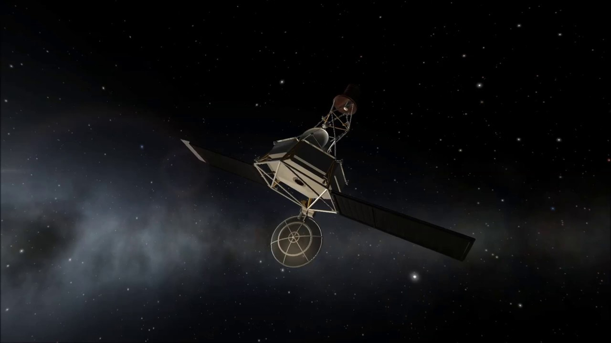
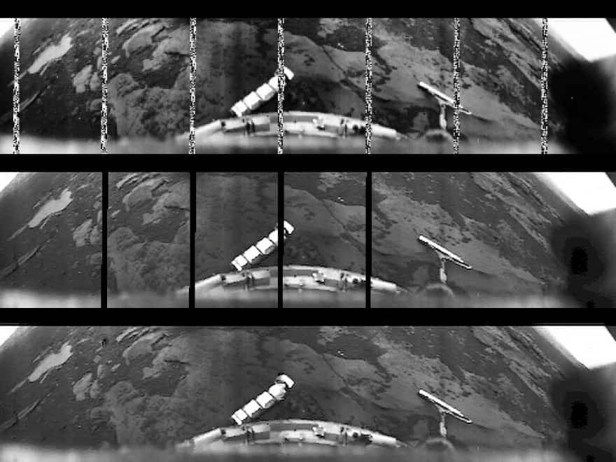

Исследование планеты Венера
За исследование Венеры активно принялись ученые СССР, которые в 1960-х гг. отправили несколько космических кораблей. Первая миссия закончилась неудачно, так как она даже не долетела до планеты.

То же самое случилось с американской первой попыткой. Но Маринеру-2, отправленному в 1962 году, удалось пройти на удаленности в 34833 км от планетарной поверхности. Наблюдения подтвердили присутствие высокого нагрева, что сразу же оборвало все надежды на наличие жизни.
Первым аппаратом на поверхности стал советский Венера-3, совершивший посадку в 1966 году. Но информацию так и не добыли, потому что связь сразу же прервалась. В 1967 году примчалась Венера-4. По мере спуска механизм определил температуру и давление. Но батареи быстро разрядились и связь потерялась, когда он еще находился в процессе спуска.

Маринер-10 пролетел на высоте в 4000 км в 1967 году. Он получил сведения о давлении, атмосферной плотности и составе планеты.
В 1969 году также прибыли Венера 5 и 6, которые успели передать данные за 50 минут спуска. Но советские ученые не сдавались. Венера-7 разбилась об поверхность, но умудрилась 23 минуты передавать информацию.
С 1972-1975 гг. СССР запустили еще три зонда, которым удалось раздобыть первые снимки поверхности.

Более 4000 снимков по пути к Меркурию получил Маринер-10. В конце 70-х гг. НАСА подготовили два зонда (Пионеры), один из которых должен был изучать атмосферу и создать поверхностную карту, а второй войти в атмосферу.
В 1985 году стартовала программа Вега, где аппараты должны были исследовать комету Галлея и отправиться к Венере. Они сбросили зонды, но атмосфера оказалась более турбулентной и механизмы снесло мощными ветрами.

В 1989 году к Венере со своим радаром отправился Магеллан. Он провел на орбите 4.5 лет и отобразил 98% поверхности и 95% гравитационного поля. В конце его отправили на смерть в атмосферу, чтобы получить данные о плотности.
Мимолетом за Венерой наблюдали Галилео и Кассини. А в 2007 году отправили MESSENGER, который смог сделать некоторые измерения по пути к Меркурию. За атмосферой и облаками также следил зонд Венера-экспресс в 2006 году. Миссия закончилась в 2014 году.
Японское агентство JAXA отправило в 2010 году зонд Акацуки, но ему не удалось выйти на орбиту.
В 2013 году НАСА отправило экспериментальный суборбитальный космический телескоп, который изучал УФ-свет атмосферы планеты, чтобы точно расследовать водную историю Венеры.
Также в 2018 году ЕКА может запустить проект BepiColombo. Ходят слухи и о проекте «Venus In-Situ Explorer», который может стартовать в 2022 году. Его цель – изучение характеристики реголита. Россия также в 2024 году может отправить корабль Венера-D, который планируют опустить на поверхность.
Из-за приближенности к нам, а также сходству по определенным параметрам, были те, кто рассчитывали обнаружить на Венере жизнь. Сейчас мы знаем о ее адском гостеприимстве. Но есть мнение, что когда-то она располагала водой и благоприятной атмосферой. Тем более, что планета пребывает внутри зоны обитаемости и обладает озоновым слоем. Конечно, парниковый эффект привел к исчезновению воды миллиарды лет назад.
Однако это не значит, что мы не можем рассчитывать на человеческие колонии. Наиболее подходящие условия расположены на высоте в 50 км. Это будут воздушные города, основанные на прочных дирижаблях. Конечно, все это сделать сложно, но эти проекты доказывают, что нам все еще интересен этот сосед. А пока мы вынуждены наблюдать на нее на удаленности и грезить о будущих поселениях. Теперь вы знаете какая именно планета Венера.